2.2 The inverse of a matrix#
在这一节，我们要学习如何对矩阵求逆。这是一个代数中的很基本的问题：我们求逆，其实就是要找到一个 乘法的逆元，使得这个逆元和我们的原矩阵乘积等于单位矩阵。
根据我们上一节的习题 线代习题选#2.1 T30~T34 的论述，我们已经知道，只有方阵才有可能有逆元。但是显然不是每一个方阵都存在这样一个逆元。我们先定义 可逆 这个概念。
一个 \(n\times n\) 的矩阵 A 是可逆的，如果我们能找到一个\(n \times n\)的矩阵 C 满足
那么我们称 \(C\) 为矩阵 \(A\) 的逆，事实上，\(C\) 被 \(A\) 唯一确定。这也很显然，因为我们已经知道了左逆一定等于右逆，这样的话如果有另一个矩阵 \(B\) 也为 A 的逆，那么我们就一定可以 C 左逆而 B 右逆，得到 C=B.
我们会把 \(C\) 记作 \(A^{-1}\)，所以我们就有：
如果一个矩阵是不可逆的，我们有时候也叫它“ singular matrix ”，可逆的就是" nonsingular matrix "
对于一个 \(2\times 2\) 的矩阵，我们有下面这个定理：
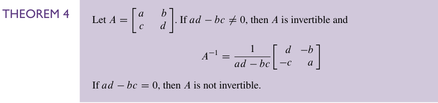
我们会在 exercise 35, 36中证明这个定理。
这个量：\(ad-bc\) 被称为 A 的 determinant，即行列式。可以看出，它确实决定着 A 有没有逆。我们的记法是:
至少在 \(2\times 2\) 的时候，\(A\) 可逆当且仅当 \(\det A \ne 0\)。
我们还有这样一个定理：
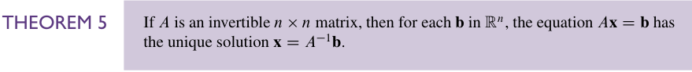
这个定理告诉我们的第一件事情是：如果 系数矩阵 A 可逆，则解唯一。
第二件事情是：如果 A 可逆，那么\(Ax\)是一个满射
这意味着它就会有很多性质。Chapter 01 Summary#09 中给出了一些。这也让我们意识到矩阵的逆的重要性。
这里有一个和物理有关的例子：
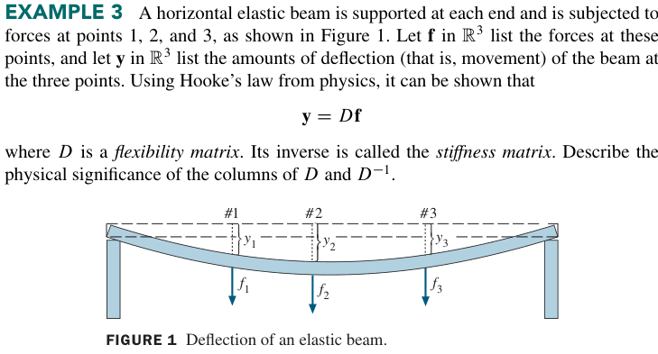
这里感觉是要用微小量的，要不然关系恐怕不会那么线性。
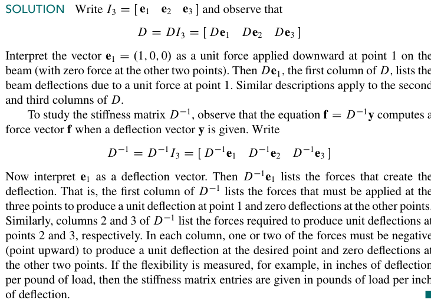
这个解里面比较容易让人迷惑的是 \(\mathbf{e_{1},e_{2},e_{3}}\)，这个看着容易让人以为是三个方向的单位矢量。但其实不是，是图中给的那三个方向的单位矢量。其实这三个矢量是相等的，在数学上，但是因为它们的作用点不同，所以其实是三个不同的矢量（说的有点绕了，能理解就好）。
下面是一个定理，给出几个 useful facts
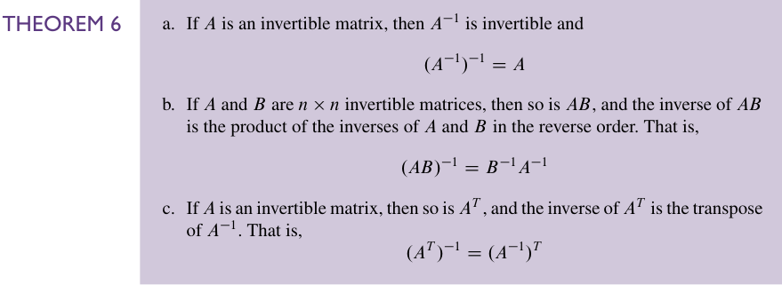
1、如果 A 可逆，那么这个逆矩阵本身也可逆，而且\((A^{-1})^{-1}=A\)
……这几乎是显然的
2、如果 A、B 都可逆，那么 \(AB\) 也可逆，有\((AB)^{-1}=B^{-1}A^{-1}\)
去考虑 \(B^{-1}A^{-1}AB\) 这个乘积。首先它肯定存在，因为大家都是 \(n\times n\) 的矩阵。然后利用结合律就很显然了。
3、如果 A 可逆，那么 A 的转置可逆，且转置的逆是逆的转置。
去考虑 \((AA^{-1})^T=(A^{-1})^TA^T=I\) 就好了。
然后这第二个性质还可以推广。其实和对矩阵求转置是差不多的。关键都是逆序。
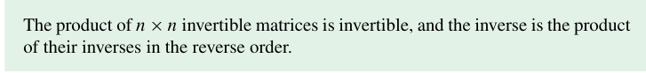
也就是，可逆矩阵的乘积是可逆的（乘积不改变矩阵的可逆性），然后这个逆矩阵是它们分别取逆的反向乘积。
也就是说，取逆作用于乘法和转置作用于乘法是一样的感觉。最后都是要 reverse。
这里有一个很有意思的事。为了表示它的重要，以及我第一次看到这个东西带给我的震撼，我决定引用原文：
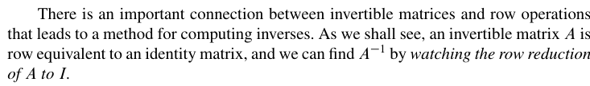
笔记
这里有一个很重要的逆矩阵和行变换的联系，从这个联系出发，我们会得到一种计算逆矩阵的方法：正如我们将要看到的，一个逆矩阵可以被行简化成一个单位矩阵，通过观察行简化的过程，我们就可以得到 A 的逆。
Elementary Matrices （初等矩阵）#
一个 初等矩阵 是由单位矩阵经过一次行变换得到的矩阵。比如说这几个：
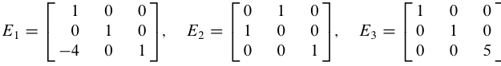
那我们显然不会无缘无故的就把几个矩阵拉出来，赋予一个特殊的“初等矩阵”的名头的。它们之所以会被命名成“初等矩阵”，是因为它们事实上代表了三个行变换。我们可以分别看一下 \(E_{1}A,E_{2}A,E_{3}A\) 的值。
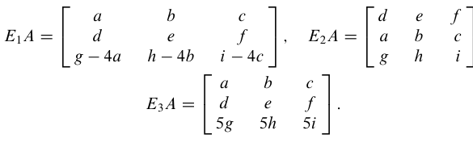
把这三个矩阵左乘在 A 上，得到的矩阵就是对 A 做相应行变换的结果！
事实上，这个 \(E_{1}\) 的左乘不仅可以作用在 A 这样一个 \(3 \times 3\) 的矩阵。你应该已经想到了，它可以作用在一个任意的 \(3 \times n\) 的矩阵上，得到的最后结果就是把这个矩阵行变换过的结果！
所以我们就有了这样一个结论：
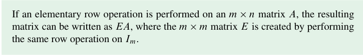
如果一个基本行变换作用在了一个 \(m \times n\) 的矩阵 A 上，那么最后的结果就可以被写成 \(EA\)，这个 E 是一个 \(m \times m\) 的矩阵，通过对单位矩阵 \(I_{m}\) 做相同的行变换得到。
行变换的可逆性就很自然地带来了 \(E\) 的可逆性。
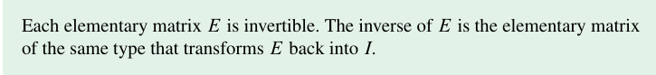
所以其实初等矩阵的逆都很好找。
下面这个定理给出了一个比较好的方法来 看出 一个矩阵是否可逆。
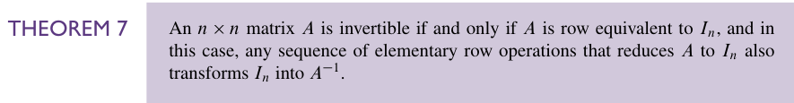
也就是说：1、可逆的矩阵和单位矩阵是行等价的。
2、任何的把 A 简化到单位矩阵的行变换的序列都可以把单位矩阵转化成 A 的逆
下面给一个书上的证明：
假设 A 可逆，那么根据 Theorem 5，我们就可以知道 \(A\vec{x}\) 是满射，然后再根据上一章的定理 4 Theorem 4，我们就可以得到 A 在每一列都有一个 pivot position。然后又因为 A 是个方阵，所以这些 pivot position 只能在对角上，这意味着 A 的 REF 一定是单位矩阵。也就是\(A\sim I_{n}\)
然后如果 \(A\sim I_{n}\)，那么就可以给出一个基本行变换的序列，这个序列的作用可以看成是一系列初等矩阵的乘积的作用，显然这就是 A 的逆了。然后如果我们作用在 \(I_{n}\) 上，那显然就会得到这个逆嘛。而这等价于对单位矩阵做相同的行变换。

于是我们就有了一个计算 \(A^{-1}\) 的算法。
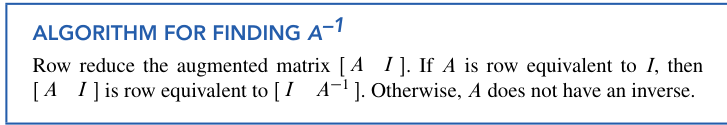
这就把求逆变成了行简化。